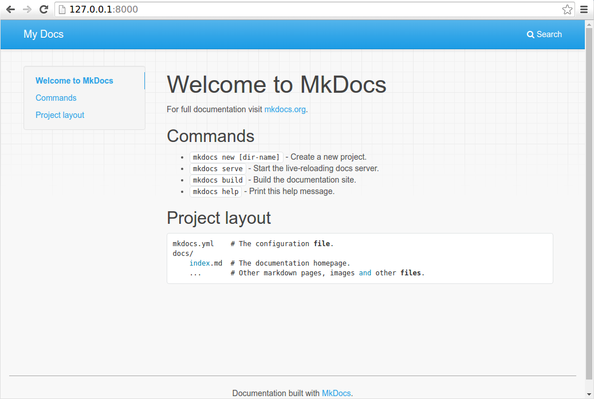

Creating an open-source site with MkDocs
July 2, 2026
For several years, I paid for a site that hosted information about me and included my writing samples. As a technical writer, with (too) many years of GitHub and GitLab experience, there was no reason why I couldn't just do this with open source tools. So during my current hiatus from full-time employment, I took this as an opportunity to convert my paid site. And I chose to do this with MkDocs. Follow along with this blog if you want to create one for yourself.
Requirements
Review the MkDocs Installation page for specific requirements and installation steps. The TL;DR is that you'll need the following:
- Python: Run
python --versionin Command Prompt or Terminal to see if you have this. - pip: Run
pip --versionin Command Prompt or Terminal to see if you have this. - A text editor. I use Visual Studio Code. Other popular ones are Cursor and Sublime.
- A public GitHub repository: You need this to store your files in a public GitHub repository and to deploy it in GitHub Pages.
- Clone your repository so that you can work with a local copy.
You'll also want to have a basic understanding of GitHub and Markdown.
Installation
Run the following command to install MkDocs:
pip install mkdocs
Tip
Open a Terminal in VS Code or in your editor to run these commands.
Create your project
Now that MkDocs is installed, run the following commands to create your project. The example below creates a project called my-project and stores it in the C:\Users\<username>\repository\my-site folder.
# Change directories to the repository where you'll store these files.
# This assumes you have a GitHub repository called "my-site".
cd ~\repository\my-site
# Create the new project
mkdocs new my-project
Next, run the following command to change directories and see what MkDocs built.
# Change directories to the new project
cd my-project
The mkdocs new command creates a new folder with the name of your site along with two other files:
- mkdocs.yml: This is the main configuration file for your site and includes your site's navigation.
- index.md: This is the front or home page of your site.
These files are enough to see your site in action. Run the following command to launch the site on a local web server:
mkdocs serve
Note
Keep this Terminal window open while working on your site. The server will maintain a log of events that it encounters while you make updates.
To see the site, open a browser and navigate to 127.0.0.1:8000 (or localhost:8000). You should see a basic page that looks similar to the following image:

Update the front page
At this point, you'll want to update the index.md file and personalize your front page. This is where understanding Markdown comes in handy. You can delete everything on the current index.md file and add your own content. You can see what my index.md file looks like by viewing it in my repository.
Tip
When your browser is open to your site, your site will automatically reload with your changes each time you save a file. If it doesn't automatically reload, stop the server by pressing Ctrl + C in your Terminal, then restart the server using mkdocs serve --livereload.
Add another page
When adding pages and files, be aware of your project's file structure. In my site, any page that's a top-level page in my navigation is stored directly in the /docs folder. I store my blog posts in a /docs/blog folder. And I store my images in a /docs/images folder.
Note
At this point, only the mkdocs.yml file should exist outside of the /docs folder.
Now let's create a new file called my-portfolio.md in the /docs folder.
# My portfolio
This page shows some of my work from over the years.
In the mkdocs.yml file, add the new my-portfolio.md page to your site's nav element.
site_name: My Docs
site_url: https://example.com/
nav:
- Home: index.md
- My portfolio: my-portfolio.md
Change the theme
MkDocs installs two themes by default: mkdocs and readthedocs. In your mkdocs.yml file, change the theme to readthedocs and see how your site changes.
site_name: My Docs
site_url: https://example.com/
nav:
- Home: index.md
- My portfolio: my-portfolio.md
theme: readthedocs
There are a number of third-party themes that you can choose from to personalize your project. These are available at the following sites:
After you choose and install the theme you want, just change the theme element in the mkdocs.yml file. In fact, review the documentation for your theme to see all of the additional configurations you can add to your mkdocs.yml file. You can view my yml file, which is pretty basic, but so far does all that I need.
Build the site
After you add all your pages, if everything looks good, then you're ready to build the site. This is a simple process using the build command.
# Stop the local server by pressing Ctrl + C in your Terminal.
# Build the site
mkdocs build
The build command will generate a static website in a new /site folder, which sits directly under your project folder. At this point, you can take that folder and deploy your site on a web server. Or you can deploy it in GitHub Pages.
Add a gitingore file
You don't want to check or track documentation builds in your repository. The files within the site/ fodler are simply output files rather than source files. Create a gitignore file and add the contents of the site/ folder to it so that these files aren't tracked.
echo "site/" >> .gitignore
Now verify that the site/ folder is ignored.
git status
You shouln't see the site/ folder in the output of git status. If you do see site/, it could be that git is saving your .gitignore file with the wrong text encoding (like UTF-16 instead of UTF-8) or it contains a hidden character called a Byte Order Mark (BOM). Run the following commands to fix the gitignore file.
# Run this command in your PowerShell terminal to rewrite the file cleanly:
Set-Content -Path .gitignore -Value "site/" -Encoding utf8
# Run this command to verify that Git actually reads the text inside the file now:
git check-ignore -v site/index.html
# Run this command to verify the site file is ignored:
git status
Check in your source files
Before deploying, commit and check in all of your files.
# Review the list of new and changed files
git status
# Add the new and changed files to the repo
git add .
# Commit the changes
git commit -m "Initial checkin of my project"
# Push the changes to the repository
git push
Deploy the site in GitHub Pages
Now that everything is checked in, you can deploy your site in GitHub Pages by running the following command:
mkdocs gh-deploy
And that's it! After GitHub finishes the deployment, you can see your site live at:
<yourGitHubHandle>.github.io/<yourRepository>